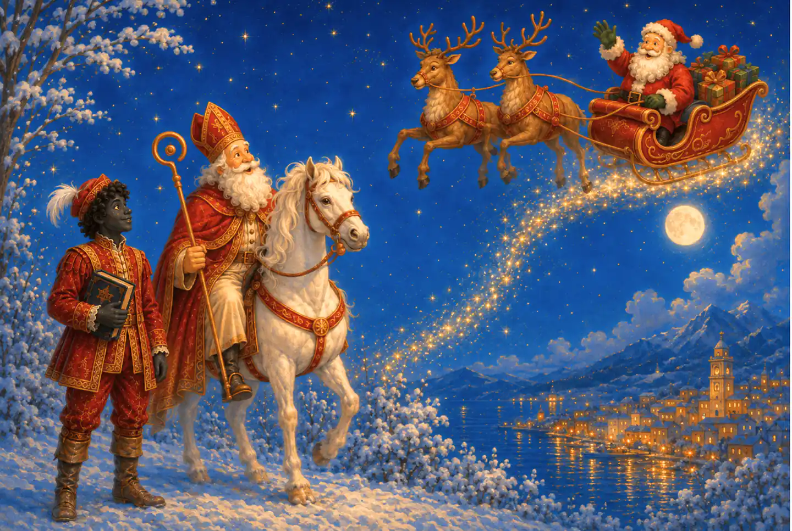

Édition physique horizontale avec des illustrations en double page.
Acheter l'édition reliée →
Accueil › Mes livres › L'origine du Père Noël : Saint Nicolas
✦ Disponible
L'histoire qui précéda la légende
L'origine du
Père Noël
Avant le traîneau, les cadeaux et le costume rouge, il y eut un homme, une légende et un voyage qui transforma Noël pour toujours.
Relié : 91 pages · Kindle : 46 pages · Édition espagnole.
Deux formatsIllustrations horizontalesLecture en famille
Disponible
Choisissez comment
découvrir l'histoire.
Achetez l'édition espagnole en relié ou sur Kindle. Le lien vous conduira à la boutique Amazon correspondant à votre pays.
Édition espagnoleRelié · Kindle
Chaque double page apparaît comme une grande composition horizontale.
Lire sur Kindle →Quatre scènes, un même voyage
Une histoire qui traverse
les siècles, les mers et les traditions.
Découvrez quatre moments essentiels du conte, d'Alicante et de l'enfance de Nicolas à la tradition néerlandaise de Sinterklaas.

01 · Alicante, le tournant inattendu
Et si saint Nicolas, le premier Père Noël, vivait en Espagne ?
Le conte fait du port d'Alicante le point de départ d'une aventure de Noël qui relie l'Espagne à l'origine d'une légende universelle.

02 · Patara, bien avant la légende
Découvrez l'histoire de saint Nicolas de Bari dès sa jeunesse.
Avant la mitre, le bateau et la renommée, il y eut un enfant qui comprit que la véritable richesse consistait à partager et à aider les plus démunis.

03 · Deux noms réunis par Noël
Découvrez comment une histoire en a fait naître une autre.
Découvrez ce qui unit saint Nicolas et le Père Noël, ce qui les distingue et comment la générosité de l'un a traversé les siècles et les frontières.

04 · La tradition néerlandaise
Découvrez la tradition néerlandaise de Sinterklaas et des Pieten.
Dans la tradition néerlandaise, saint Nicolas vit en Espagne. Ce conte imagine qu'il quitte chaque année le port d'Alicante avec les jeunes Pieten pour distribuer de la joie sur les toits et par les cheminées.
À propos du conte
De saint Nicolas
au Père Noël.
Le conte part de la figure de saint Nicolas pour faire découvrir aux lecteurs l'origine d'une tradition qui, avec le temps, inspirera le personnage du Père Noël.
À travers une aventure illustrée, le livre parle de générosité, d'entraide et de la manière dont une histoire peut voyager entre les lieux et les générations sans perdre sa magie.
À l'intérieur du livre
Une édition créée
pour lire et explorer.
La composition visuelle fait partie de la narration et accompagne chaque moment de l'aventure.
Une histoire d'origine
Un voyage narratif vers saint Nicolas et la tradition qui finira par donner forme au Père Noël.
Illustrations horizontales
Des scènes amples et détaillées, disponibles dans les éditions reliée et Kindle.
Des valeurs à partager
Générosité, solidarité et empathie accompagnent une lecture destinée aux enfants et aux adultes.
Données de l'édition
Une histoire illustrée
dans le format de votre choix.
Informations actualisées sur les deux formats espagnols disponibles sur Amazon.
Questions fréquentes
Tout ce qu'il faut savoir
avant de choisir.
Informations actualisées sur les éditions disponibles de L'origine du Père Noël.
Peut-on déjà acheter le livre ?
Oui. L'édition espagnole est disponible sur Amazon en version reliée et Kindle.
Dans quels formats est-il publié ?
Il est disponible en édition reliée et Kindle. Les deux versions conservent ses illustrations horizontales.
Combien de pages comporte le livre ?
L'édition reliée compte 91 pages. L'édition Kindle réunit chaque double page en une grande composition horizontale et compte 46 pages.
Y aura-t-il une édition anglaise ?
Oui. Une édition anglaise indépendante est prévue, mais elle n'est pas encore disponible.
Également dans la collection
Découvrez les autres histoires
Deux contes illustrés sur la tradition, l'empathie et des personnages qui laissent une empreinte.